Product overview
SOLIS listens to the visit with the patient's consent, writes the note, codes the diagnoses from what the patient actually said, checks the claim against the rules payers deny on, and exports it ready for billing.
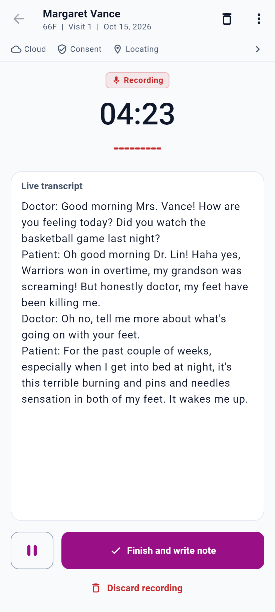
Record with consent, pause any time.
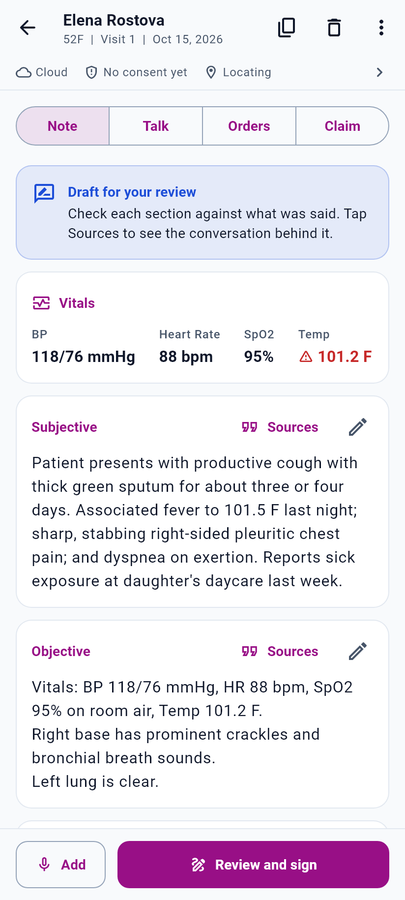
A draft note to check and sign.
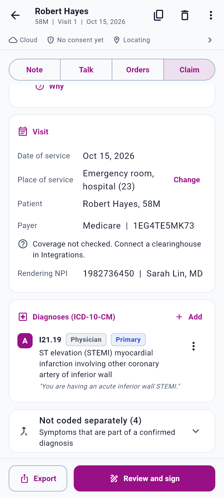
Coded, checked, exportable.
Why SOLIS
Ambient scribes have shown they can cut note-writing time, but physicians still report that long notes and heavy editing are the main drawback. And a well-documented visit can still be denied if the codes on the claim don't line up.
Each SOAP section is a separate card with one-tap edit, and a Sources button shows the exact words from the visit behind it, so checking takes seconds instead of rereading a transcript.
Symptoms are coded from how the patient describes them ("my feet burn at night" becomes paresthesia, R20.2). Diagnoses the physician states with hedged language wait for confirmation, as outpatient coding rules require.
Every procedure must be supported by a related diagnosis. Place of service, sex-specific and age-limited codes, and new versus established patient are checked before the claim is marked ready.
The claim exports in CMS-1500 and X12 837P structure, so a practice can feed its billing system directly instead of sending charts to an outside billing company and waiting.
Time and revenue impact will be measured in the pilot program and reported per clinic. This document makes no savings claims that have not yet been measured.
Physician experience with ambient scribes: Physician Perspectives on Ambient AI Scribes, JAMA Network Open (jamanetwork.com/journals/jamanetworkopen/fullarticle/2831866). Outpatient uncertain-diagnosis rule: ICD-10-CM Official Guidelines, Section IV.H.
How it works
Insurance card, driver's license barcode or SSN card is read on the phone.
One account per patient; each date of service is Visit 1, 2, 3.
Consent first, then the conversation is captured and split by speaker.
Note, transcript and orders, each traceable to what was said.
Codes checked against payer rules, exported for billing.
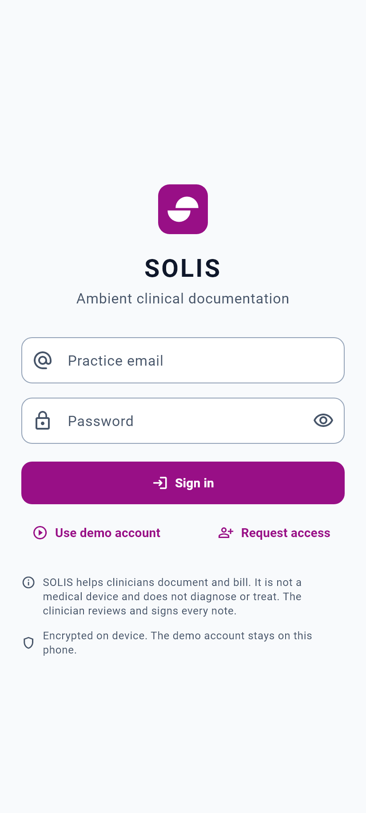
Choose whether notes are written on the device or in the cloud.
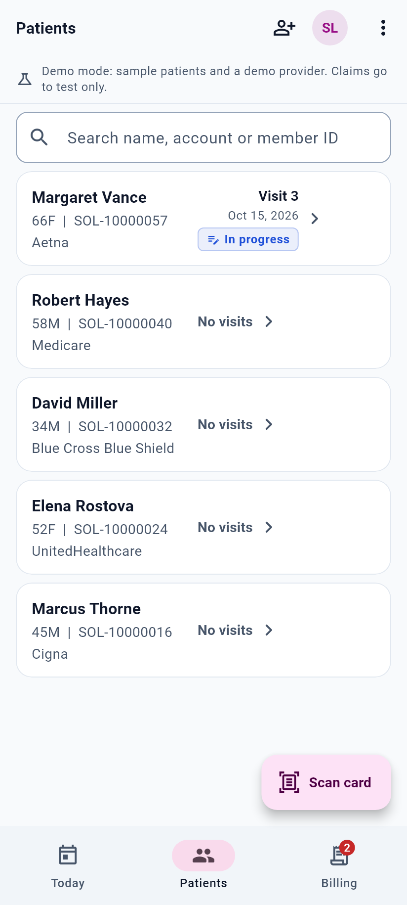
Search by name, account number or member ID. Scan card is the main action.
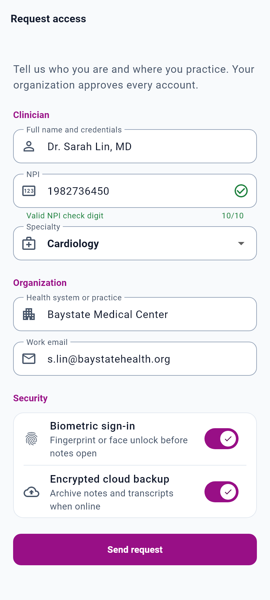
The NPI is checked with the CMS check-digit rule as it is typed.
Step 1 and 2
Card text and the license barcode are read on the device and the photo is deleted after reading. Every field stays editable. If the card matches an existing patient, SOLIS offers that account instead of creating a duplicate.
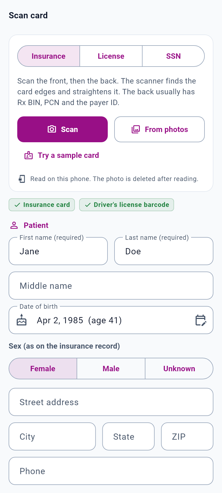
Name, date of birth, sex, payer, member ID, group, Rx BIN and PCN, copays.
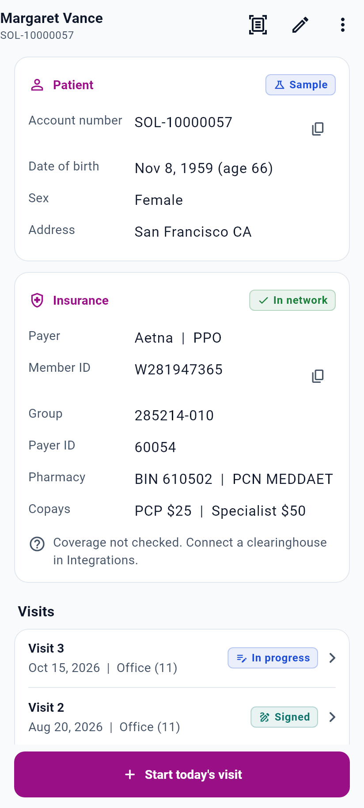
Account number with a check digit, an in-network check, and numbered visits with status.
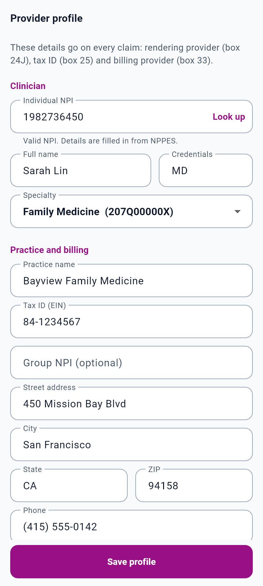
NPI, tax ID, taxonomy, practice address and accepted payers go on every claim.
Step 3
One large button starts recording after the physician confirms the patient agreed. The consent time is saved with the note. Recording can pause for a sensitive topic and keeps running with the screen off.
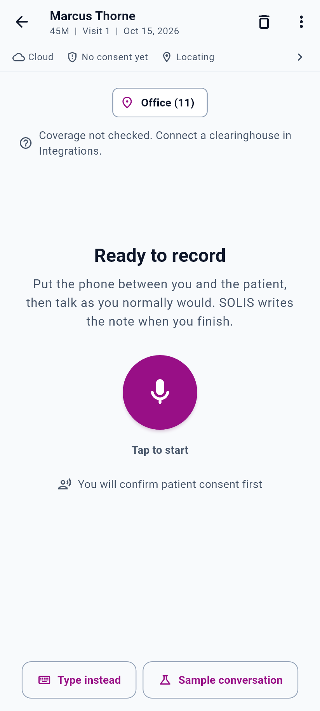
Or type the conversation instead.
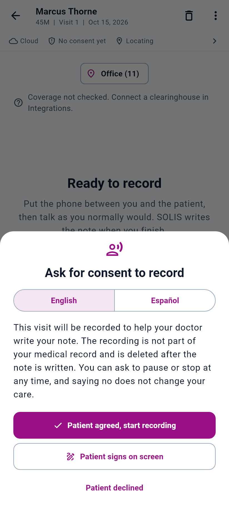
A short script for the patient, and a clear "declined" path.
Timer, live transcript, pause, finish, or discard with nothing kept.
Step 4
Vitals are recorded only when they are stated in the visit; nothing is filled in with assumed values. The transcript separates doctor and patient, and orders are sorted with STAT items first.
Draft banner, vitals with abnormal values flagged, Sources per section.
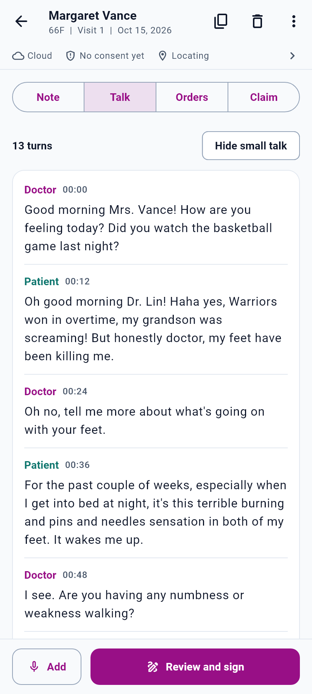
Speaker turns, small talk can be hidden, raw transcript archived.
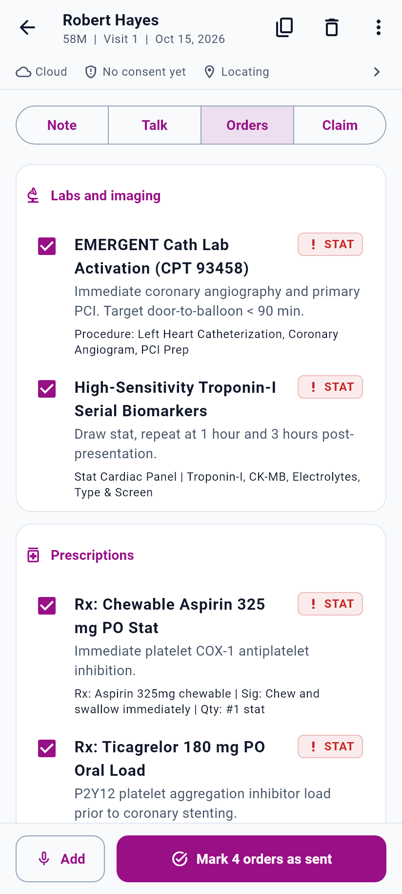
Labs, imaging, prescriptions and referrals, sent after confirmation.
Step 5
Diagnoses appear in claim order with pointer letters, each with the words that support it. Uncertain diagnoses wait for confirmation. Symptoms that belong to a confirmed diagnosis are folded in. Every service line shows which diagnosis supports it.
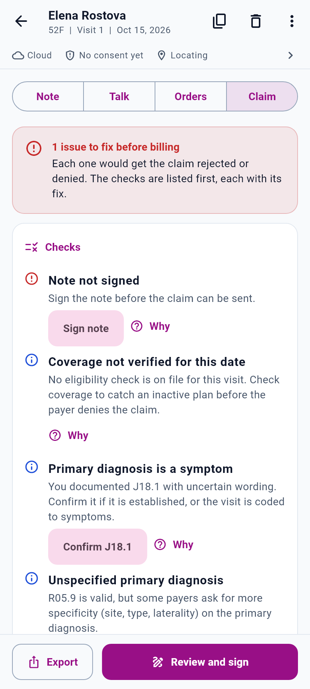
"Sounds like pneumonia" is held; cough and fever are coded.
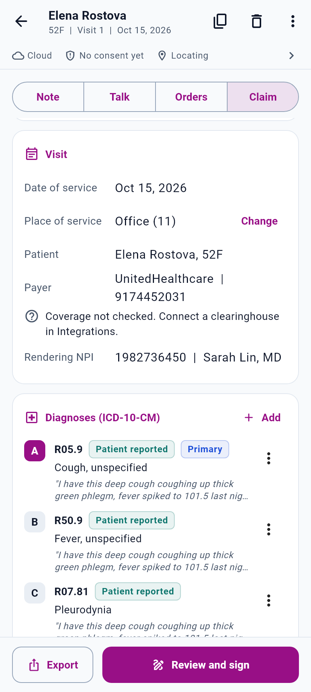
One tap to confirm. Checks explain anything a payer would reject.
An ER visit bills the ER code, and the EKG as interpretation only.
Coding rules
| Rule | What SOLIS does |
|---|---|
| Patient language first | Symptoms are coded from the patient's own words, in the order the patient raised them, so the chief complaint leads. |
| Uncertain diagnoses | "Sounds like", "suspicious for", "consistent with" and similar wording are not coded until the physician confirms (ICD-10-CM outpatient guideline IV.H). |
| Integral symptoms | Symptoms that are part of a confirmed diagnosis, such as chest pain with a heart attack, are not coded separately. |
| Diagnosis supports procedure | Each CPT code must link to a diagnosis in a related body system. A headache cannot support an upper GI endoscopy. |
| Place of service | The visit code follows the setting: office, telehealth, emergency room, hospital, nursing facility, home. Ambulance bills transport codes, never a visit code. |
| Sex and age | Sex-specific codes (pregnancy, prostate) and age-limited codes (newborn, preventive age bands) are checked against the patient. |
| New or established | Derived from the patient's visit history; a new-patient code on a return visit is flagged. |
| Performed vs ordered | Tests only ordered elsewhere are not billed by the practice. An EKG read in a facility bills interpretation only. |
| Claim export | CMS-1500 boxes and X12 837P loops in one JSON document, with diagnosis pointers filled in. |
Place of service codes: CMS Place of Service Code Set. Sex and age edits modeled on the CMS Medicare Code Editor definitions; commercial payer edits may differ.
Design
Body text is never below 14 points and the note reads at 16. Touch targets are at least 48 dp. Status always pairs an icon with a word, never color alone. Light and dark themes, and layouts that hold on small phones.
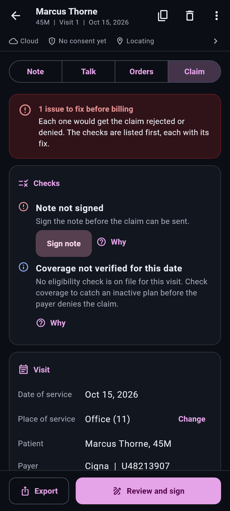
For night shifts and dim rooms.
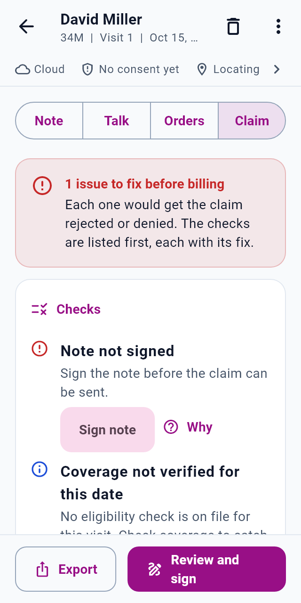
Rows stack instead of squeezing on 320 dp screens.
Every check says what is wrong and how to fix it.
Privacy and status
| Area | Status |
|---|---|
| Card scanning | In place Read on the device; the photo is deleted after reading. Only the last 4 digits of an SSN are kept. |
| Screen protection | In place Screenshots, screen recording and recent-app previews are blocked. |
| Consent and audit trail | In place Consent time, UTC timestamp and location are saved with each visit. |
| On-device notes | In place Notes can be written entirely on the phone, without sending audio or text out. |
| Cloud notes | Next Moving the cloud model to a service covered by a Business Associate Agreement before real patient data is sent. |
| HIPAA program | Next Risk analysis, policies, training and BAAs with clinics and vendors. HIPAA has no official certification; this is how compliance is shown. |
| SOC 2 Type II | Planned Independent audit of security controls over an observation period. |
| Billing integration | Next Direct submission to a clinic's billing system or clearinghouse API. |
Pilot clinics get discounted pricing in exchange for feedback. Their results set the time and revenue figures we publish.
Android now. iOS, web checkout, and links for YouTube, Instagram, LinkedIn and the app stores will be added at launch.